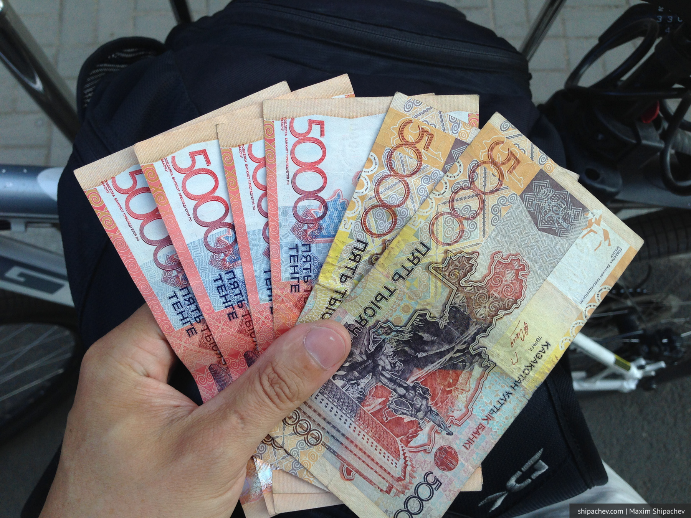

С каждым новым путешествием на автомобиле мы берём с собой всё меньше вещей. Если в первый раз мы брали с собой спальники и палатку, то в этот раз необходимость каждой вещи оценивалась очень строго.
Что бы я рекомендовал:
1. Выполните все финансовые обязательства. Понятно, что интернет сейчас доступен в большинстве цивилизованных стран, а банк-клиент позволяет оплачивать кредиты удалённо, но лучше оплатить их заранее.
2. Возьмите с собой наличные. Эта рекомендация сильно зависит от страны, куда вы путешествуете на автомобиле, но для Казахстана и Киргизии она вполне актуальна. Казахстанские тенге можно купить в Сбербанке. Я это делал в отделении на пр. Ленина, 120. Курс вполне достойный. В Алма-Ате будет такой же, на границе — дороже. Чтобы не прыгать по банкоматам, лучше сразу посчитать необходимую сумму и взять её. Примерный курс 1/3. То есть, за 10000 рублей вы получите чуть больше 30000 тенге. Киргизские сомы купить в Кемерове сложнее. Возможно стоит попробовать заказать их в том же сбербанке, в количестве хотя бы на один день. Примерный курс 1/1. В казахстанских обменниках сомов также нет. При эквиваленте >5000 сомов в Киргизии охотно принимают доллары. Сомы пригодятся вам уже на таможне для оплаты экологического сбора. Если сомов нет, таможенник возьмёт у вас и рубли, но курс будет на его усмотрение. Не берите с собой крупные купюры.

3. Безналичные деньги раскидайте по нескольким картам. Современному человеку пользоваться картой привычно и удобно, но помните, что некоторым банкоматам карта так же очень нравятся и иногда они оставляют их себе. Для снятия наличных за рубежом хорошо использовать карту Тиньков-банка — если снимать более 3000 рублей, нет комиссии. На заправках я использовал карту Промсвязьбанка с кэшбэкэм. В Казахстане заправлялись на КазМунайГаз, в Киргизии на Газпромнефти. 95-й бензин был только на этих заправках в Киргизии.
4. Проверьте условия страхования. К счастью, обозначенные страны входят в СНГ и, в отличие от поездки в Грузию, расширять как в этот раз не пришлось, но лучше уточнить этот момент в вашей страховой. Казахстанское ОСАГО вы купите на границе, на 5 дней, примерно 180 рублей. В Киргизии никакого ОСАГО нет, будьте внимательны
5. Разберитесь с сотовым оператором. Убедитесь, что включен роуминг и уточните необходимость подключения специальных пакетов, которые позволят сэкономить. В этот раз я даже решил поближе познакомиться с роумингом интернета от Билайна, но про интернет будет отдельный пост.
6. Посетите автосервис. Перед путешествием в 6-10 тысяч на автомобиле нелишним будет поменять фильтры и масло. Всегда так делаю. Ходят слухи, что казахстанские таможенники могут спросить у вас талон техосмотра. Таких талонов в России сейчас нет, его заменой является диагностическая карта, которую вам выдают при прохождении техосмотра. Вы могли её отдать страховщику для оформления ОСАГО, поэтому желательно получить её дубликат. В «Картель-Авто» такой сделали без слов и за 3 минуты.
7. Обновите программы на телефоне. Во-первых, у вас там может стоять софт, который вам пригодится, во-вторых, лучше сделать это на домашнем вай-фае, чем на гостиничном, который еле шевелится. Про программы для путешествий тоже напишу пост.
8. Перепишите мультфильмы на планшет. Это пункт вообще нужно ставить первым номером, если вы едете с детьми. Если один — запишите себе каких-нибудь коротких документалок.
9. Обновите карты на навигаторе. В этот раз я сделал это на втором этаже «Лапландии». В обмен на 800 рублей у меня появились самые свежие карты Сибири, России, Казахстана и Киргизии.